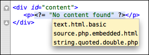

5 Bundles
A lot of functionality in TextMate is provided through various bundles, many of which are language specific.
The default bundles are located in /path/to/TextMate.app/Contents/SharedSupport/Bundles. Normally you do not need to care about this, as you inspect (and edit) the bundles through the bundle editor (which can be reached through the Window menu).
5.1 Activation of Bundle Items
If you select Bundles → Bundle Editor → Show Bundle Editor you will see the command center for customizing TextMate.

From this window you can create and edit things like snippets, commands, language grammars, etc. which will be explained in more detail in the following sections.
Most items edited in the Bundle Editor represent actions you want to execute while editing text. TextMate offers a few ways to do this and has a simple yet powerful system to understand the current context when evaluating which action the activation method should result in, called scope selectors, which is explained in a later chapter.
5.1.1 Key Equivalents
The easiest way to perform an action (from the keyboard) is in the form of a key equivalent. A key equivalent can be any key with optional modifiers and is configured by activating the key equivalent field and pressing the key to which the item should be bound.

If you want to disassociate a key equivalent with an item, press the X shown while the key equivalent field is in recording mode.
If multiple items are given the same key equivalent then a menu will appear when that key equivalent is pressed, as shown below (all of the items in the Math bundle are bound to ⌃⇧C so a menu with each key equivalent option is displayed).

5.1.2 Tab Triggers
As well as assigning a single key equivalent to a bundle item, it is possible to assign a tab trigger to the item. This is a sequence of text that you enter in the document and follow it by pressing the tab key (⇥). This will remove the sequence entered and then execute the bundle item.
For example the Text bundle has a snippet which inserts the current date conforming to ISO 8601 (YYYY-MM-DD). The tab trigger for this snippet is isoD (short for ISO Date). In your document it is thus possible to type isoD and press tab to “expand” that to the current date.
This allows you to create much better mnemonics for your bundle items as you can literally type the thing you want to execute (e.g. the snippet to insert). It is generally a good idea to use actual words instead of abbreviations (like use list instead of lst) since the purpose is to make it easier to remember, so the tab trigger should generally be the first thing that pops into your mind in the unabbreviated form.
Tab triggers are rendered in the right side of the menu item with a slightly rounded rectangle as background and the tab character (⇥) shown as a suffix to the tab trigger.

Tab triggers are also useful when they match program keywords and lead to actions (such as inserting snippets) that do what you would normally do after entering the keyword. For example in Ruby a method starts with def so creating a snippet for a Ruby method and assigning it def as tab trigger gives a natural flow, as you would write def as usual and then use tab instead of taking the normal actions. Had the tab trigger for a method (in Ruby) instead been method or similar, it means you would have to remember “I can insert a snippet for this” before typing def, whereas with def as the tab trigger, you have to remember it before pressing the space after def (basically just pressing tab instead of space).
As with key equivalents, entering a tab trigger and pressing tab will show a menu, when multiple items share the same tab trigger. This can be used to provide a simple form of code-completion, for example in CSS the tab trigger list has been assigned to all properties that start with list. So in CSS typing list followed by tab will give a useful menu from where you can pick what list property needs to be inserted.
5.2 Editing Default Bundles / Items
Some of the default items may not be to your exact liking, for example the coding style in snippets may differ from yours, so you may want other tab triggers, key equivalents, or similar modifications.
If you edit a default item the difference will be stored in ~/Library/Application Support/TextMate/Bundles. These are then merged with the default version so your changes will be effective even after upgrading TextMate. All new items you create also end up in this location.
Bundles or bundle items which you install by dragging them to TextMate or double clicking will be installed in ~/Library/Application Support/TextMate/Pristine Copy/Bundles. Editing these will also result in only the differences being stored in ~/Library/Application Support/TextMate/Bundles, meaning that if you later get a new version of this third party bundle, you can safely install this one on top of the old one (by dragging it to TextMate) and again your changes will be preserved.
If you want to discard local changes then currently the only option is to delete these from ~/Library/Application Support/TextMate/Bundles.
5.3 Deleting Default Bundles / Items
You can also transparently delete default bundles and bundle items from the bundle editor. However, since the items are shipped with the TextMate application, they are not removed on disk, since they would then reappear after an upgrade.
Instead each bundle has an info.plist file which keeps the ordering of bundle items and also stores which of the default items should act as if they have been deleted. When you change the ordering of items in a default bundle or delete items, this file is copied to ~/Library/Application Support/TextMate/Bundles/«bundle name».tmbundle and will contain this info.
If you delete an entire bundle the information is recorded in TextMate’s preferences. You can get a list of which default bundles have been deleted by running the following line in terminal:
defaults read com.macromates.textmate OakBundleManagerDeletedBundles
To reset the list of deleted bundles (i.e. undelete them) instead run this (while TextMate is not running):
defaults delete com.macromates.textmate OakBundleManagerDeletedBundles
This may all sound a little complicated, but generally you should not care about these details. Just use the bundle editor to create, edit and delete your items and bundles and it should work as expected.
5.4 Hiding Bundles
Instead of deleting default bundles you may want to just hide them (since you never know if you someday will need some of the default ones).
This is done by clicking the Filter List… button below the list in the bundle editor. Here you can uncheck the bundles that you do not wish to have shown in the various lists of bundle items.
5.5 Sharing Bundles and Bundle Items
If you want to share a bundle or particular bundle item then you can drag it directly from the bundle editor (from the list in the left side of the window) to the Finder.
This item can then be sent to other people and they will be able to double-click it to install it. Note: this also works for single items, like a snippet or a command.
5.6 Assorted Bundles
Often a bundle will provide support for a particular language (though there are exceptions like the Source, Text and TextMate bundles). To get a good idea of what features the bundle provides, it is best to investigate it in the bundle editor (accessible from the Windows menu). When appropriate, a language bundle should provide the following, with key bindings as shown:
Build (⌘B) — build the current source/project. Normally that means compile it.
Run (⌘R) — run the current source (script) or product from building a project.
Documentation for Word (⌃H) — lookup the current word (or “unit”) in the documentation (often online).
Validate Syntax (⌃⇧V) — run the syntax through whatever form of syntax checker exist for the current document type. Generally show errors as a tool tip, but for more complex validation, HTML output is sometimes used.
Wrap in «Something» (⌃⇧W) — wrap the selection in what makes sense for the current document type, e.g. open/close tags in HTML, begin/end environment in LaTeX.
Convert to «Something» (⌃⇧H) — convert the document into something which makes sense, e.g. for HTML run it through tidy, for Markdown convert it to HTML, for an XML property list convert it to the more readable ASCII version, etc. Generally this is done in-place, overwriting the current document.
Continue «Something» (⌅) — continue the current construct on the next line e.g. a line comment, list item or similar.
Preview Document (⌃⌥⌘P) — by default this opens the Web Preview, but it has been overloaded for some markup languages for a preview more suited for that language (i.e. doing the HTML conversion and setting up a basic style sheet before showing it).
Insert Close Element (⌥⌘.) — by default this inserts the appropriate closing tag (HTML) but is overloaded in some contexts to insert whatever constitutes a close element (e.g.
\end{environment}in LaTeX).Comment Toggle (⌘/) — toggle comment characters around the current line or selection.
Many bundles also have a Help command with some details about how to use and customize its functionality.
Bundle actions can be accessed through the gear pop-up in the status bar. This menu can also be brought up by pressing ⌃⎋.
Below are a few highlights from miscellaneous bundles.
5.6.1 Diff
The Diff bundle provides a language grammar for the output produced by the diff shell command.
You can show the differences between two files in TextMate by running the following command from your terminal:
diff -u old_file new_file|mate
The bundle also has commands to show the differences between the current document and the saved copy, between the selected files in the project drawer (with an HTML output option) and it has a command to open the selected files in Apple's FileMerge using opendiff (requires the developer tools to be installed).
5.6.2 HTML
The HTML bundle contains useful stuff for working with HTML. A few particularly useful actions are:
Insert Open/Close Tag (⌃<) — this command will take the word just typed and change it into
<word></word>placing the caret in the middle. It will recognize those tags where a close tag is not allowed (likehr) and instead insert<word>placing the caret after the tag.Wrap Selection in Open/Close Tag (⌃⇧W) — this will put
<p>…</p>around the selection but allows you to overtype thep(and add arguments). After you are done, press tab to move the caret past the</p>tag.Wrap Selection as Link (⌃⇧L) — this turns the selection into link text for an anchor where you can then fill in the URL.
The HTML bundle also has a drag command for images which insert the dropped image with proper dimensions (width/height) and an alternative text derived from the file name.
A lot of actions in the HTML bundle will cause tags to be inserted. E.g. pressing ⌃↩ inserts <br>, dropping an image on a HTML document inserts <img …>, etc.
If you want tags with an EMPTY content model to use the minimized (XHTML) form (that is <br /> instead of <br>) then in Preferences → Advanced create a new variable named TM_XHTML and set it to ‘ /’ (the value of this variable will be inserted before the > in the generated tags with EMPTY content model).
For the records have a look at Sending XHTML as text/html Considered Harmful before embracing XHTML.
5.6.3 LaTeX
Three commands of special interest in the LaTeX bundle are:
Typeset & View (PDF) (⌘B) — this will run
pdflatexon your current file, orTM_LATEX_MASTER(if that variable is set). If there were errors, these are shown as clickable links, otherwise the resulting PDF will be shown in the HTML output (requires Tiger or Schubert’s PDF Browser PlugIn).Insert Environment Based on Current Word (⌘{) — this mimics the HTML bundles ⌃< in that it makes the current word into
\begin{word} … \end{word}and places the caret in between. There are various configuration options for this command, for details see the Help command in the LaTeX bundle or the source for the command itself (via the Bundle Editor).Insert Command Based on Current Word (⌘}) — like the previous command, but makes word into
\word{}with the caret inside the braces.
If you have not installed LaTeX you can use the i-installer (binaries).
Alternatively, if you have MacPorts then open your terminal and run:
sudo port install teTeX
5.6.4 Source
The source bundle contains default actions and preferences for source code. Of interest is the Comment Line / Selection (⌘/) which will toggle the comment characters for the current line or selection. This command is setup for different languages via three context dependent variables.
The various macros to go to end-of-line and insert the line terminator character (; by default) and/or a newline are also rather useful.
5.6.5 SQL
The SQL bundle has a command that can submit the current line or selection as a MySQL or Postgres query (⌃⇧Q) and show the result using HTML output.
It uses a few environment variables to store connection details. These are described in the bundle’s Help file.
5.6.6 Subversion
All actions in the subversion bundle are accessible through ⌃⇧A. These offer the commands which would be used in a common workflow.
None of the commands are made to prompt you for a password. For repositories offered through WebDav (i.e. http or https) svn should cache your authentication. This post describes how to generate an ssh key pair for secure-shell tunneling (ssh).
The commit action will commit the files selected in the project drawer or current file if there is no selection. The commit window also allows you to exclude files before doing the actual commit.
In the commit window you can use enter (⌅) to trigger the “Commit” button shown in the bottom right corner.
5.6.7 Text
The text bundle is for actions and preferences related to basic text editing. From a users perspective some of this should probably have a more native placement than being in a bundle.
The four probably most useful actions are:
Delete Line (⌃⇧K) — delete the current line.
Document Statistics (⌃⇧N) — this provides a tool tip which show how many lines, words and characters the current document contains.
Duplicate Line / Selection (⌃⇧D) — this will duplicate the current line, leaving the caret in the same column on the new line, or if there is a selection, duplicate that.
Sort Lines in Document / Selection (F5) — this will sort the lines or selection alphabetically.
5.6.8 TextMate
The TextMate bundle is kind of a meta bundle. That means none of the actions are for text editing but are instead intended for creating new bundle items, searching the mailing list archive, pasting the current selection to an IRC channel or similar.

One command which is useful when working on themes or language grammars is the Show Scope (⌃⇧P) which shows the current scope of the caret (more about scopes later).
5.6.9 Xcode
The Xcode bundle has actions to build the Xcode project located in the folder that contains the current document or project and to run the resulting target.

It also has commands to import an Xcode project but generally it is better to drag the folder with your Xcode project to the TextMate application icon, since currently the TM_PROJECT_DIRECTORY variable is not correctly setup for imported projects and a lot of bundle actions rely on this (e.g. the Subversion stuff).
5.7 Getting More Bundles
Only the most popular bundles are included with TextMate. There is a subversion repository which has dozens of other bundles mostly adding support for various languages. You can see the list of bundles here.
5.7.1 Installing Subversion
If you are not using Leopard you will need to install the subversion client.
If you have MacPorts then open your terminal and run:
sudo port install subversionIf you use Fink then install the svn-client package.
If you have neither Fink or MacPorts you can grab subversion from Martin Ott's homepage or any of the pre-build binaries from here.
5.7.2 Setting LC_CTYPE
You must set the LC_CTYPE variable to use UTF-8. If you do not, svn will give you an svn: Can't recode string error when it stumbles upon non-ASCII filenames (some of the bundle items use these).
If you are using bash you should put this in your ~/.bash_profile (or a similar file which gets sourced when you open a terminal):
export LC_CTYPE=en_US.UTF-8
Users of zsh should put it in ~/.zshrc and tcsh users should instead put this line in their ~/.tcshrc:
setenv LC_CTYPE en_US.UTF-8
Remember that after adding this, you need to start a new shell for the updated profile to take effect.
Also be aware that the LC_ALL environment variable takes precedence over LC_CTYPE, so if you have set this elsewhere you should either unset it or change that to use UTF-8.
5.7.3 Installing a Bundle
When you have svn installed it is relatively easy to either checkout or export a bundle. TextMate searches for bundles in all the usual library locations, so if you have the rights to do so (on your machine) it is recommended that you perform all checkouts to /Library instead of ~/Library, since this then keeps installed bundles separate from custom bundles (or bundles you have edited).
As an example, to install the Haskell bundle, first create the install directory, then change to it and ask svn to check it out:
mkdir -p /Library/Application\ Support/TextMate/Bundles
cd /Library/Application\ Support/TextMate/Bundles
svn co http://svn.textmate.org/trunk/Bundles/Haskell.tmbundle
At a later time you can update the bundles which you have installed by executing these two lines:
cd /Library/Application\ Support/TextMate/Bundles
svn up *.tmbundle
If TextMate is running while you perform the update, you may want to also execute the following line:
osascript -e 'tell app "TextMate" to reload bundles'
This is equivalent to selecting Bundles → Bundle Editor → Reload Bundles from within TextMate.
5.7.4 Support Folder
Included with TextMate is a support folder which contains miscellaneous support items used by various bundle items. This folder is reachable via the TM_SUPPORT_PATH environment variable and would normally point to /Applications/TextMate.app/Contents/SharedSupport/Support.
If you checkout a bundle from the subversion repository then this bundle may rely on a newer version of the support folder than the one included with TextMate. If this is the case, you will need to also checkout a local copy of the support folder.
The process is similar to checking out a bundle, first ensure you have LC_CTYPE setup properly and then execute the following in your shell:
cd /Library/Application\ Support/TextMate
svn co http://svn.textmate.org/trunk/Support
After this you can test it by pasting the following line into TextMate and pressing ⌃R (to execute it):
echo "$TM_SUPPORT_PATH"
It should result in the following output:
/Library/Application Support/TextMate/Support
The support folder contains a version file (named version) so rather than pick the most local version of the support folder, TextMate will choose the one with the highest version. This means that if you do checkout a local copy of the support folder and later update TextMate, your local (potentially outdated) copy will not eclipse the default one.
5.7.5 RSS Feed With Bundle Change Log
Changes made to bundles are not part of the normal release notes. Instead these are available through an RSS feed.